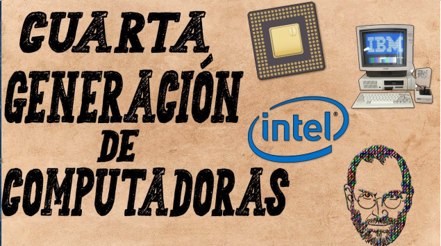

GENERACIONES DE COMPUTADORAS
CUARTA GENERACION (1971-1980) | |
 |
La cuarta generación de computadoras se caracterizó por el uso de microprocesadores, lo que permitió la creación de computadoras más pequeñas, rápidas y económicas. Estas máquinas fueron más accesibles para el público general y comenzaron a ser utilizadas en entornos empresariales y domésticos. Estas computadoras operaban con lenguajes de programación más avanzados, como FORTRAN y LISP, lo que facilitó el desarrollo de software. Además, comenzaron a aparecer los sistemas operativos y se mejoró la capacidad de almacenamiento. Un ejemplo representativo de esta generación es la IBM 1401, ampliamente utilizada en la década de 1960 para aplicaciones empresariales y científicas. |